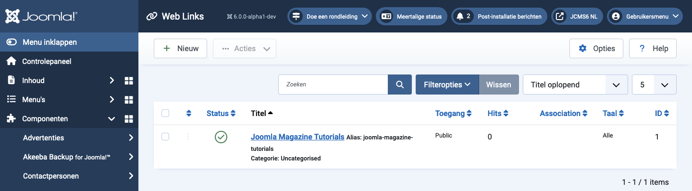

Joomla Help Screens
Weblinks
Beschrijving
De Weblinks-component stelt u in staat om links naar andere websites te beheren en deze in categorieën te organiseren om ze op uw site weer te geven. Optioneel kunt u bezoekers toestaan om nieuwe links toe te voegen. Deze component is niet inbegrepen in Joomla 4 of later, maar kan worden verkregen van de download site en geïnstalleerd als elke andere extensie.
Gemeenschappelijke Elementen
Sommige elementen van deze pagina worden behandeld in aparte Help-artikelen:
Toegang krijgen
Selecteer Componenten → Web Links → Links vanuit het Beheerdersmenu.
Screenshot

Vertaald door openai.com